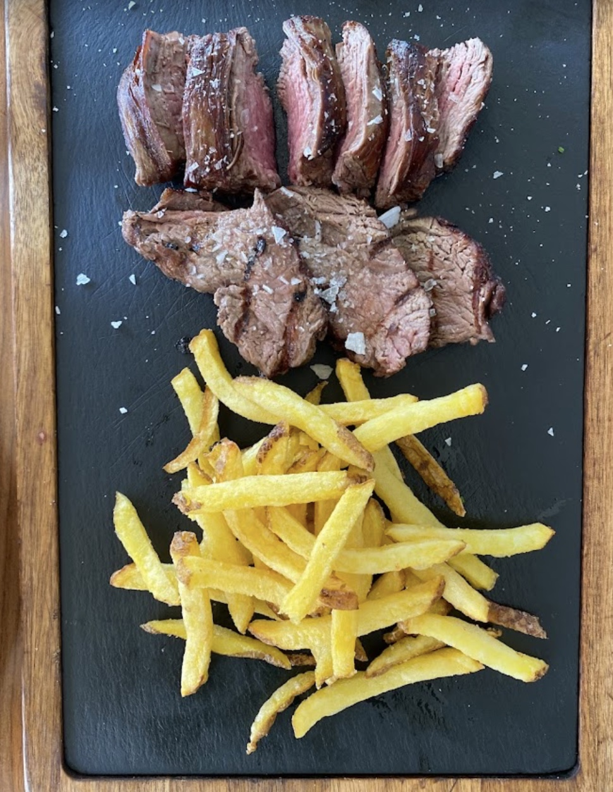
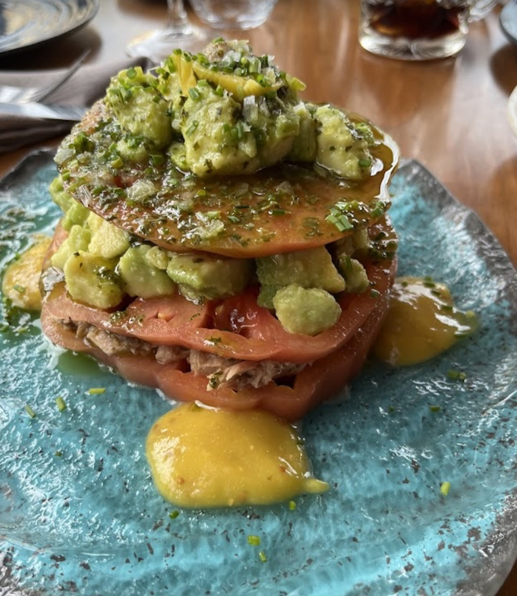

Steak tartar de solomillo
Corte fino, aliño equilibrado y una presentación que refuerza el ticket medio alto.

Rincón de la Victoria · Brasa · Producto
Una experiencia de asador premium donde la brasa, la carne y el ambiente juegan en otra liga.
Salón acristalado, terraza, cocina a fuego y una carta pensada para disfrutar sin prisas. Reserva en segundos y conviértelo en un sí.
Nosotros
La Casa Asador combina estética cuidada, brasas reales y una carta con foco claro: carnes seleccionadas, entrantes potentes y platos que entran por los ojos y convencen al primer bocado.
No vende una historia forzada. Vende una experiencia actual, elegante y muy fácil de recomendar: buen producto, ambiente cálido y un espacio que transmite valor desde que entras.


Destacados
Selección visual de algunos de los platos que mejor transmiten el posicionamiento del local.
Corte fino, aliño equilibrado y una presentación que refuerza el ticket medio alto.

Pimientos asados, caballa y aguacates del terreno con un emplatado que eleva el producto local.

El corazón de la marca: punto de cocción serio, corte protagonista y sabor directo.

Remate visual y dulce para aumentar recuerdo de marca y cierre de experiencia.
Carta
Secciones claras, platos destacados y precios visibles sin saturar la experiencia.
Galería
Imágenes reales del local y de platos clave para reforzar deseo y credibilidad.




Reseñas
Los comentarios se repiten en lo importante: ambiente cuidado, buena brasa, producto sólido y servicio atento. Eso es exactamente lo que convierte.
Ambiente cálido, servicio profesional y una experiencia muy redonda. La ensalada Axarquía, las croquetas y el solomillo reciben menciones especialmente positivas.
Cliente verificadoEl salón superior y la decoración destacan mucho. También se menciona una carta amplia y carnes que dejan sensación de sitio serio para volver.
Reseña recienteLa ubicación, el trato del personal y la sensación general de local bonito y bien llevado refuerzan la confianza antes de reservar.
Opinión onlineUbicación
Calle la Corta, 14, 29730 Rincón de la Victoria, Málaga.
Contacto y reservas
Teléfono: 680 381 534
Horario: martes a sábado de 13:00 a 16:30 y de 20:00 a 24:00. Domingo de 13:00 a 16:30. Lunes cerrado.